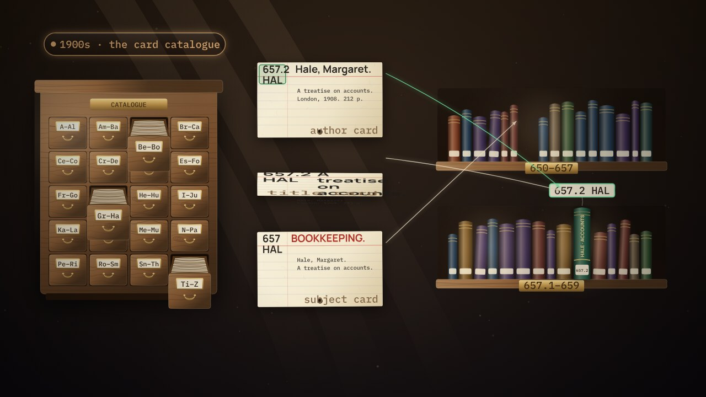
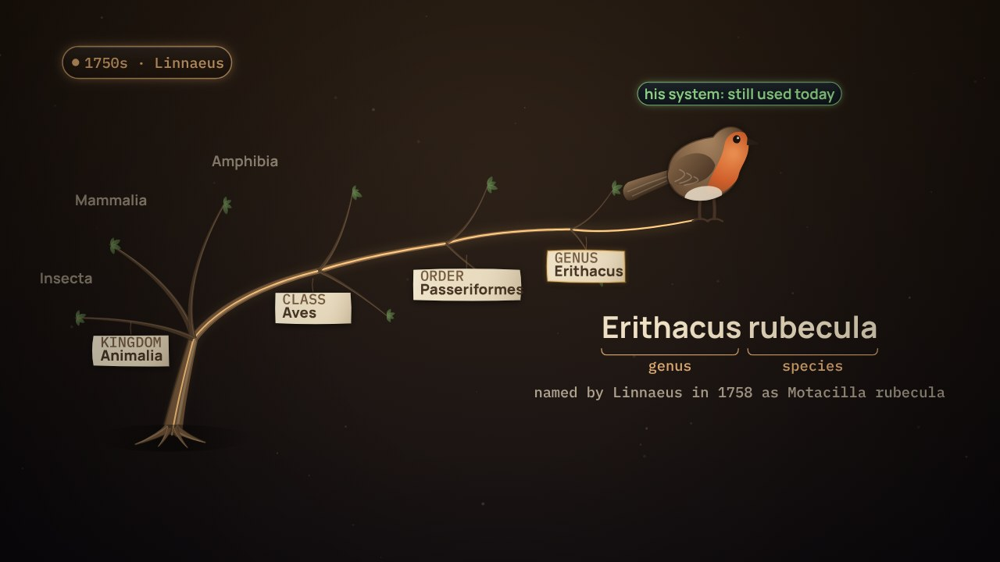

← Previous · Film 4 of 7
Many ways to read
Star, vault or one wide table? Each shape has a job and a place. Choose per question, not per fashion.
Topics › Data modelling › From words to data
In 1879, a cash register added each sale to the day's total; within a few years, registers recorded each sale too. Today, hybrid databases write and read in one place, and remove the copy between them; they don't remove the model.
Pause and think is on: the film stops for one question at the end of chapters.
Download the videoCaption filesRead the script
Where next?
The four Pause and think questions, for a class or a team. Open one to see the answer.
This film's lab, and its situation, among the series' 7 labs and 7 situations. Your progress stays in this browser.
Take it apart: Apply the changes in order →Make the call: 1 situationEvery lab
Film 5 of 7.

← Previous · Film 4 of 7
Star, vault or one wide table? Each shape has a job and a place. Choose per question, not per fashion.

Next · Film 6 of 7 →
An assistant answers from the meaning it can read. Glossary, taxonomy, ontology and semantic layer stack.